@CBSNews
📝 原文: Father and 2 young sons on capsized jet ski rescued after 16 hours stranded off Thai island
🇨🇳 译文: 父亲和两个年幼的儿子乘坐翻船的摩托艇在泰国岛屿上滞留 16 小时后获救

🕒 2026-08-16T06:00:00+00:00
| 来源 | 旧窗口内数量 | 本次新增 | 本次淘汰 | 当前窗口内共有 |
|---|---|---|---|---|
| 推文 + Dawn 新闻 | 0 | 27 | 0 | 27 |
| ARY News | 0 | 0 | 0 | 0 |
注：淘汰数 = 旧窗口内数量 + 本次新增 - 当前窗口内共有
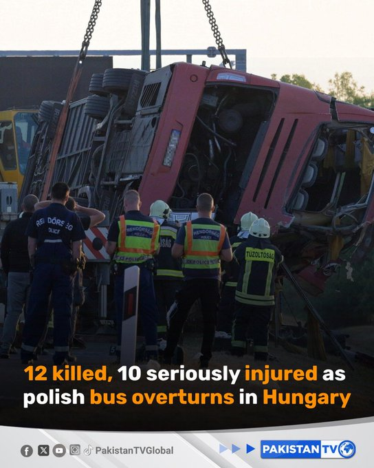
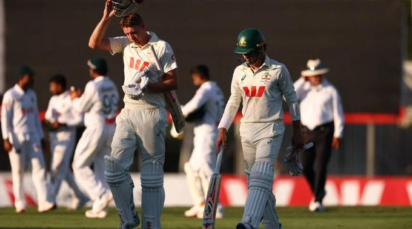
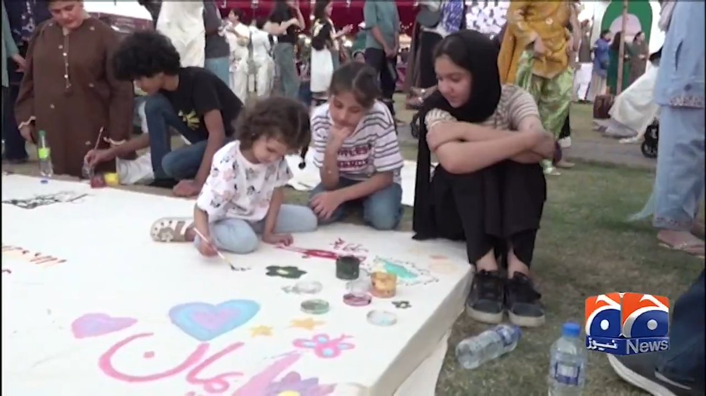
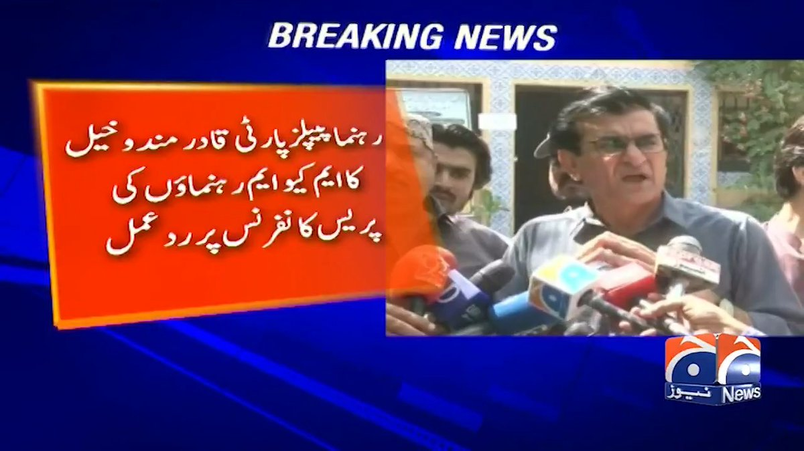
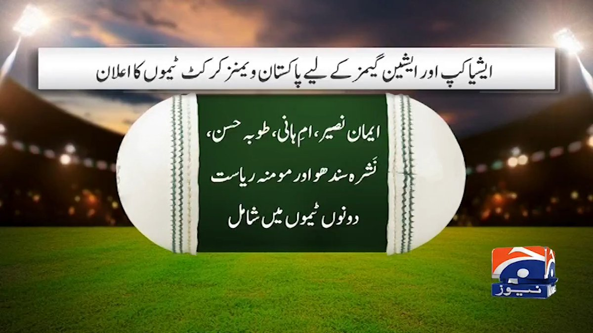
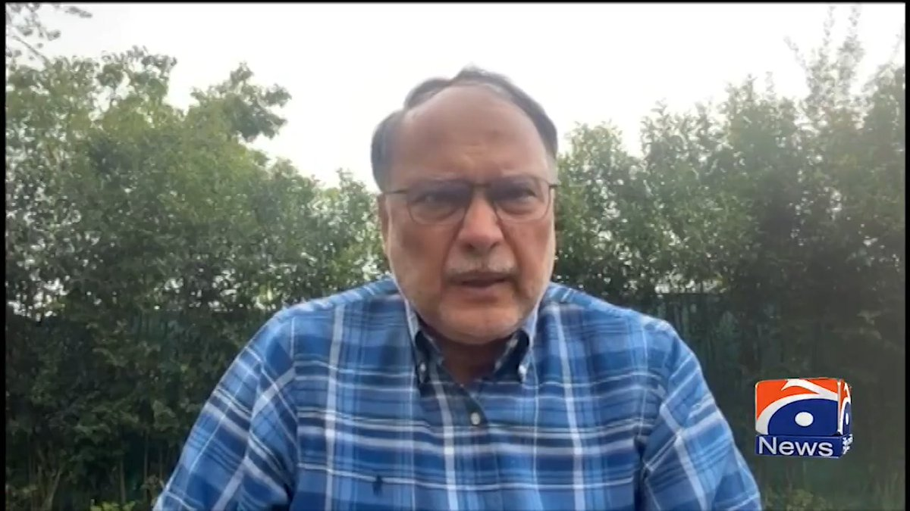
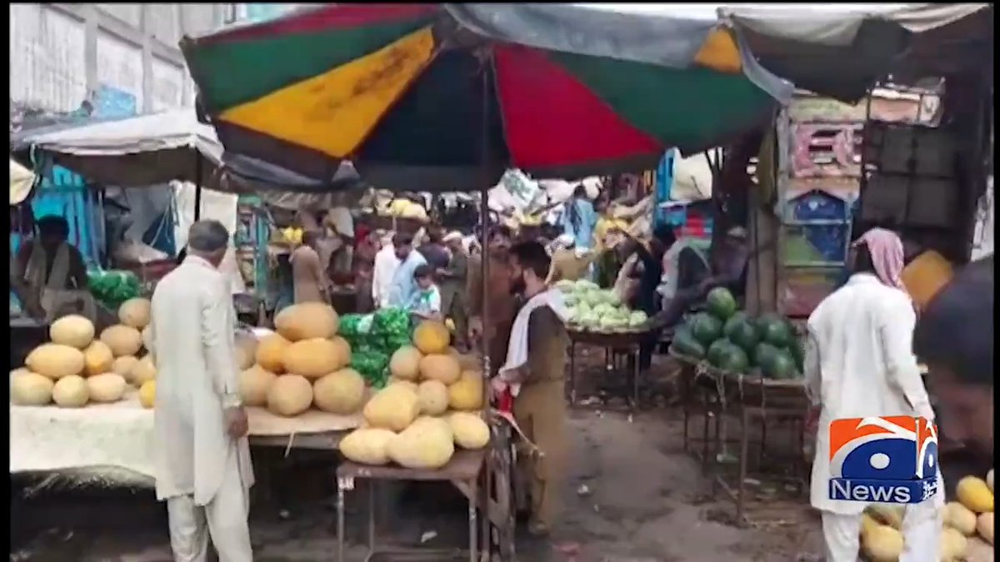
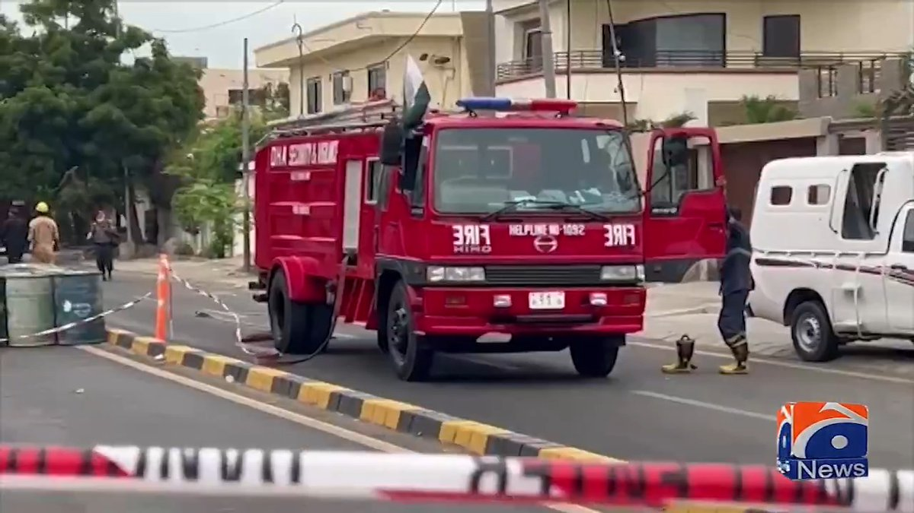
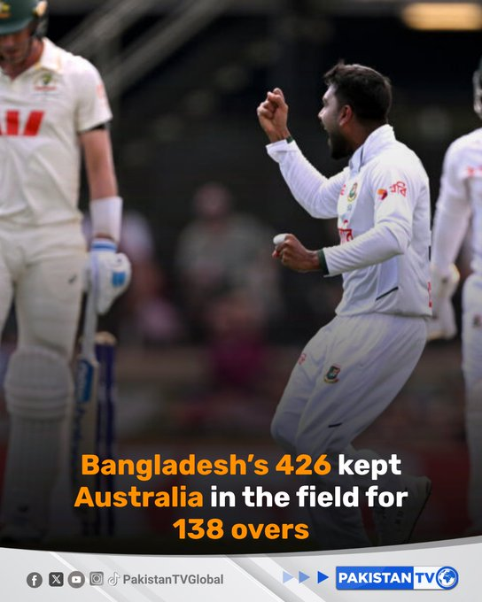
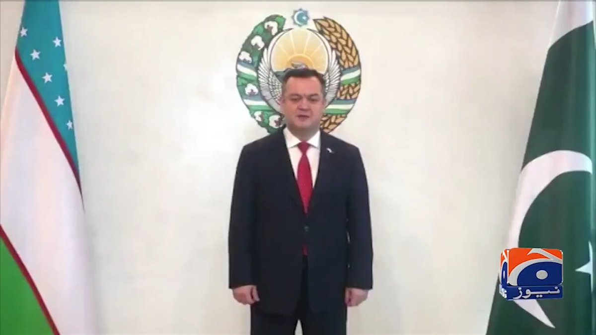
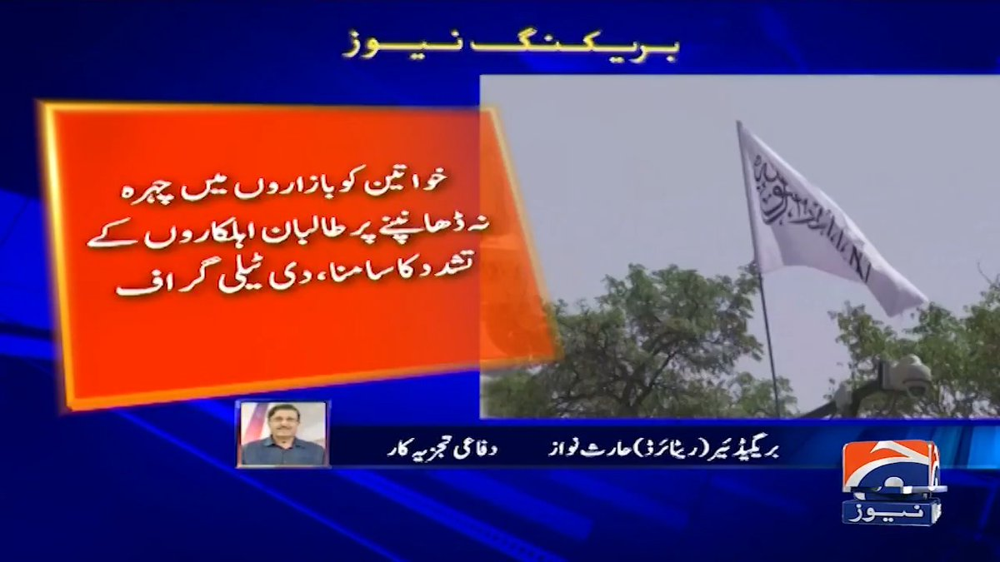


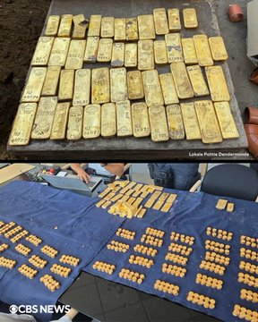
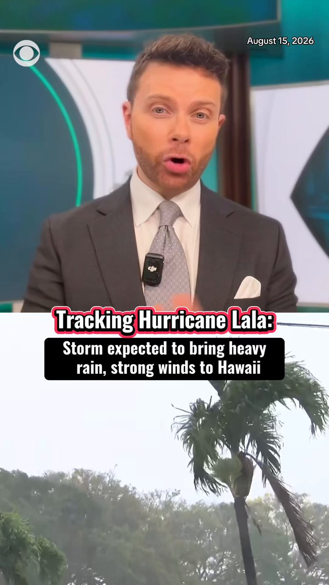
暂无文章。